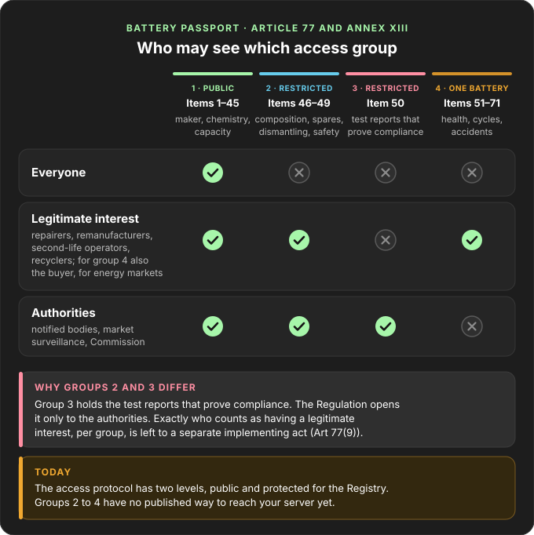

Battery passports become mandatory on 18 February 2027 for electric-vehicle batteries, batteries for light means of transport (LMT) and industrial batteries with a capacity above 2 kWh. The passport itself sits on the manufacturer's side, but Article 77(10) of the Battery Regulation adds a registry step: the battery's unique identifier has to reach the EU DPP Registry. How a company's systems do that by machine was an open question until 30 October 2026, when the Commission put a technical package on its DPP resources and documentation page.
At go-live in July 2026 operators had a web form and a file upload, but no API and no data model for batteries. The package fills most of that gap. Where we quote the Commission below, the words are its own.
The package adds six documents to the resources page:
Two older documents on the same page have also moved on. The User Guide for Economic Operators is at v1.03, last published on 16 September 2026 (the page itself calls it "v3"). The Commission's guidance on Digital Batteries Passport data points by category went to v3.2 on 19 October 2026 and to version 4 on 19 November 2026.
Most of the model is built on W3C web standards. If the acronyms are new: SKOS describes code lists, SHACL expresses validation rules, RDF is the graph data model underneath, and JSON-LD attaches shared meanings to the keys of an ordinary JSON file. Here is how far the package goes with each one.
| Standard | Role in the package |
|---|---|
| SKOS | 17 concept schemes hold every field and every code value. |
| SHACL | 18 shape files (2 core, 16 battery). According to the guide, everything else is generated from them. |
| RDF | Underlying model, shipped as Turtle files. |
| JSON-LD | 5 contexts, stacked from core to product group to sub-group, that tie plain JSON keys to the vocabularies. |
| SPARQL | Appears only as constraints inside the SHACL shapes, for example to test code-list membership. No query service exists. |
| XSD | Supplies the datatypes. XML Schemas are described in the guide, yet no .xsd file is in the download. |
| OWL | Carries version information only: ontology IRI, version IRI, version info. |
| DCAT | Not delivered. A DCAT-AP 3.0.1 catalogue is something the repository "will publish", in the words of the guide. |
None of that changes what you send. Section 2.1 of the Semantic Data Guide puts it plainly: "The registration process will be requesting JSON data format, as it is the only mandatory data format in accordance with EN 18216:2026." For JSON the Commission publishes JSON Schemas (draft 2020-12, which is not a W3C specification), generated from the shapes, and the Semantic Data Guide says JSON documents are validated with them. Passports in JSON-LD or RDF are validated with the SHACL shapes instead.
The two rule sets are not equally strict. Comparing them file by file, we found three things the shapes enforce and the JSON Schemas do not. A shape pins each battery field to its unit, a voltage to volts for instance, while the schema takes any unit address, including one missing from the code list. Shapes insist on registration per item for batteries; schemas do not. And shapes reject fields that a battery sub-group excludes; schemas let them through. The API guide is silent on which rules the Registry applies to the passport it fetches, so a passport that only clears the JSON Schema is not yet safe.
A passport must name the releases it follows, in contentSpecificationIds: one core release and one product release at minimum, plus a sub-group release if there is one. Language tags need a region subtag, so en-IE is valid and en is not.
Reuse is allowed. The 17 vocabularies and the API specifications carry the EUPL-1.2 open-source licence, and Article 12(7) of Implementing Regulation (EU) 2026/1778 makes access to the semantic repository and its APIs free of charge. The shapes, JSON Schemas and contexts have no licence notice so far. If you bundle them in a product, keep the reference to the Commission as their source.
Five operations make up the whole API. One returns the product groups you may register under. One submits a registration. Three read the Activity Dashboard, the Registry's log of tasks, so your system can follow a submission and collect the outcome for each item. You cannot read back, change or withdraw a registration through the API, and the API has no route for verifying your organisation: that still happens in the web interface.
A submission carries between 1 and 100 passports, all of one product group, each with its own UPI. JSON is the only format and 10 MB the ceiling. A battery submission also has to state a sub-group, and here the documents disagree on names. The API guide's examples use EV; the OpenAPI file's examples use EV and LMT; the data model's sub-groups are evb, ind and lmt. No document maps one set onto the other, so read the valid values from the Registry at runtime rather than hard-coding them. Processing is atomic. One failing passport and the whole submission is rejected.
The UPI, the address at which your passport can be found, may now be up to 2,000 characters long. At registration the Registry goes to that address, downloads your passport and validates it. Hosting therefore comes before registering, not after.
The package contains two authentication profiles. One covers your software calling the Registry; the other covers the Registry calling your passport server.
Only API users need this. An administrator of the verified organisation sets up a service account in the Registry (five per organisation at most) and uploads a public key. Your software then signs a short assertion with the matching private key, which stays with you, and the Commission's login service returns an access token that lasts 15 minutes. The method is OAuth 2.0 private_key_jwt with elliptic-curve keys only; shared client secrets are not offered. Some required settings are not what standard client libraries use out of the box, so your developer should work from the Service Account guide directly.

Each passport has a public part and a protected part. During registration the Registry first fetches the passport anonymously and gets the public part. Its second request carries a short-lived token signed by the Commission. Your server validates that token and, if it checks out, returns the protected part as well. The rules are strict: a request without a token gets the public part, and a request with a bad token gets a 401 or 403 error, never a quiet fallback to the public part. Static file hosting cannot do this, so you need either a small server-side check of your own or a passport provider that runs one.

Public and protected are the only two tiers today, and the Commission's Registry is the only party allowed into the protected one. The battery data model asks for more. It follows Article 77(2) and Annex XIII of the Battery Regulation and places each data point in one of four groups:
Nothing published so far tells a repairer, a recycler or an authority how to fetch groups two to four from a manufacturer's server.

Products under the Ecodesign Regulation will get their access rules one delegated act at a time: Article 9(2) of Regulation (EU) 2024/1781 leaves the question of who reads or updates which data to those acts, and Article 11 allows the Commission to lay down procedures for the digital credentials of those with access rights. The Self-Hosted Authentication Guide only notes that identifying operators by their unique operator identifier is planned for a later version.
The two guides reference IETF internet standards and nothing else. EN 18239 (access rights) and EN 18246 (data authentication), both drafted by CEN/CENELEC JTC 24, are cited neither there nor in Implementing Regulation (EU) 2026/1778. They also work at another level: the guides cover trust between the Registry and one operator's server, whereas EN 18239 deals with which other parties may read or modify controlled data and EN 18246 with signatures that let you verify both data and issuer. Set against the drafts we have read, there is no conflict. Public data is served without login, and controlled data only after authentication and authorisation. The drafts expect authentication at a high level of assurance; the Registry gets that assurance earlier, at the moment an organisation is verified, for example by a qualified seal or signature under Article 4 of the Implementing Regulation. Neither standard has been cited in the Official Journal so far, and the Commission's page on harmonised DPP standards is where a citation would appear.
User Guide v1.03 is more explicit than v1.0 on what counts as a valid seal. It has to live on a qualified device, such as a smart card or USB token supplied by your trust service provider, or be applied through a qualified remote-signing service. A certificate held as a software file (.p12 or .pfx) is refused. Anyone still shopping for a seal should check this before paying.
Six weeks before the battery model appeared, User Guide v1.03 said that successful registration of battery passports is "not currently available". The Commission has not published anything since that reverses this. Run a test registration before planning around it.
Batteries are still the only product group on offer in the Registry, and only at item level. Detergents, construction products, textiles and the ESPR product groups have no semantic model yet.
We set the battery data model beside version 4 of the Commission's data-points guidance (dated 19 November 2026; like v3.2 it says it does not represent the Commission's official position). Four data points read differently in the two. We may have missed the intended reading, so we put them as questions.
| Data point | Guidance | Data model | Question |
|---|---|---|---|
| Critical raw materials | Points to Annex X(1) of the Battery Regulation: cobalt, natural graphite, lithium, nickel | Offers the 34 critical raw materials of the Critical Raw Materials Act | Which of the two lists applies to a battery passport? |
| Temperature range for voltage values | To be given "when relevant" | Mandatory in every case | How should a passport express "not relevant"? |
| Separate-collection marking | Yes or no | Accepts "yes" only | Is "no" ruled out on purpose? |
| Rated capacity | Public item 25 repeats another item and is not filled in; restricted item 51 equals item 11 | No item 25, but a restricted rated-capacity field of its own, mandatory for EV and LMT batteries | Fill that field independently, or copy item 11 into it? |
The temperature and marking points are the urgent ones. A passport written to the guidance could be rejected by the data model's checks, so builders need an answer now. If you know what the drafters intended, please tell us.
The steps below apply to any product group once its passport rules take effect. Battery makers have to finish them before 18 February 2027.
contentSpecificationIds are filled in, because the Registry will download it.Item-level registration multiplies the work. In the web interface one form registers one passport, and one upload holds at most 100, all or nothing. A maker shipping tens of thousands of batteries a year would face hundreds of uploads, which is why the API is the realistic route. Whatever route you take, hosting and the protected endpoint remain necessary, since the Registry fetches the passport and part of the battery data is not public.
We take battery makers and their suppliers from the regulation to a passport the Registry will accept. A readiness assessment shows which of your data already covers the 71 battery data points and which of your systems can host and protect a passport. The compliance roadmap puts the seal, the hosting, the validation and the API work in order against 18 February 2027. If you want to know whether your current setup would pass the Registry's checks, that is a conversation we can have this month.
We also help DPP service providers plan the systems their customers will need to meet the Registry's rules.
Sources: European Commission, DPP resources and documentation page (technical package of 30 October 2026): API Integration Guide for Economic Operators v1.0 and OpenAPI specifications 1.0.0; Service Account Technical Integration Guide v1.0; Self-Hosted Authentication Guide for Economic Operators v1.0; Semantic Data Guide v1.0 and Semantic Data Artifacts (core 1.0.0, batteries 1.0.0); DPP Registry User Guide for Economic Operators v1.03 (16 September 2026); Guidance Document: Digital Batteries Passport, data points by category v3.2 (19 October 2026) and version 4 (19 November 2026). Commission Implementing Regulation (EU) 2026/1778; Regulation (EU) 2023/1542 (Batteries); Regulation (EU) 2024/1781 (Ecodesign).
Yes, documented since 30 October 2026 in the API Integration Guide and the OpenAPI specifications. It offers five operations: listing product groups, submitting 1 to 100 passports at once (JSON, 10 MB at most, all or nothing) and three Activity Dashboard calls to track a submission and its per-item results. Machines log in through a service account with OAuth 2.0 private_key_jwt.
In JSON, the only format the Semantic Data Guide makes mandatory, with reference to EN 18216:2026. JSON passports are validated against JSON Schemas; JSON-LD and RDF passports against SHACL shapes. XML only appears as an option for file uploads in the web interface.
The core is SKOS, SHACL, RDF and JSON-LD. SPARQL is used only within SHACL shapes, XSD only for datatypes (no .xsd files are published), OWL only for version information, and a DCAT-AP catalogue is promised but not delivered. JSON registrations are checked with JSON Schemas (draft 2020-12, not a W3C standard) according to the Semantic Data Guide; the API guide does not state which checks the Registry runs on the passport it downloads.
That is not confirmed. The battery data model came out on 30 October 2026, yet User Guide v1.03 says successful registration of battery passports is not currently available, and no later Commission text reverses this. The Registry offers no product group other than batteries, and those only per item. From 18 February 2027 the passport is required for EV and LMT batteries and for industrial batteries above 2 kWh.